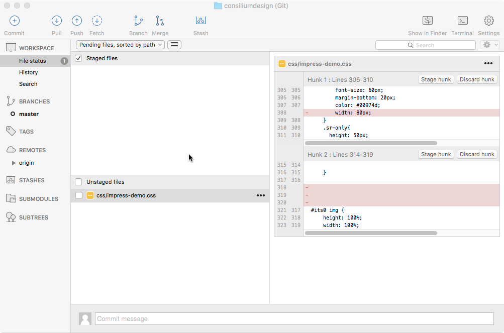
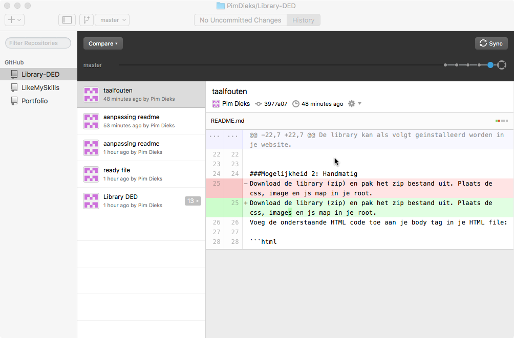
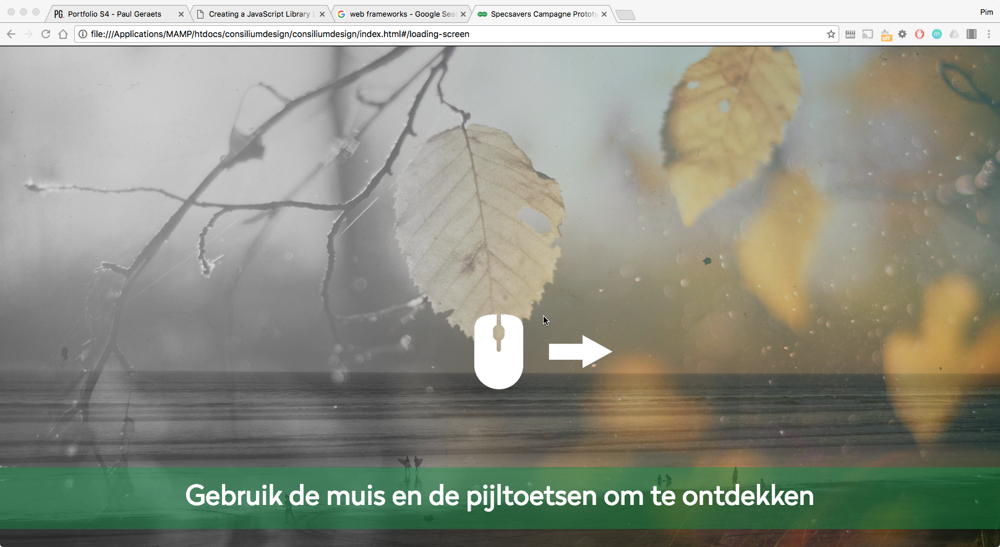
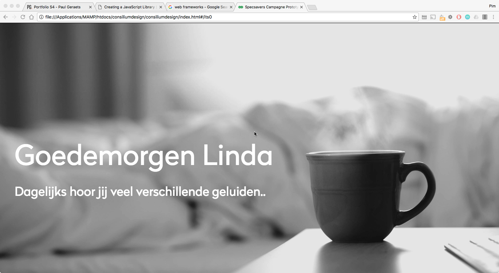
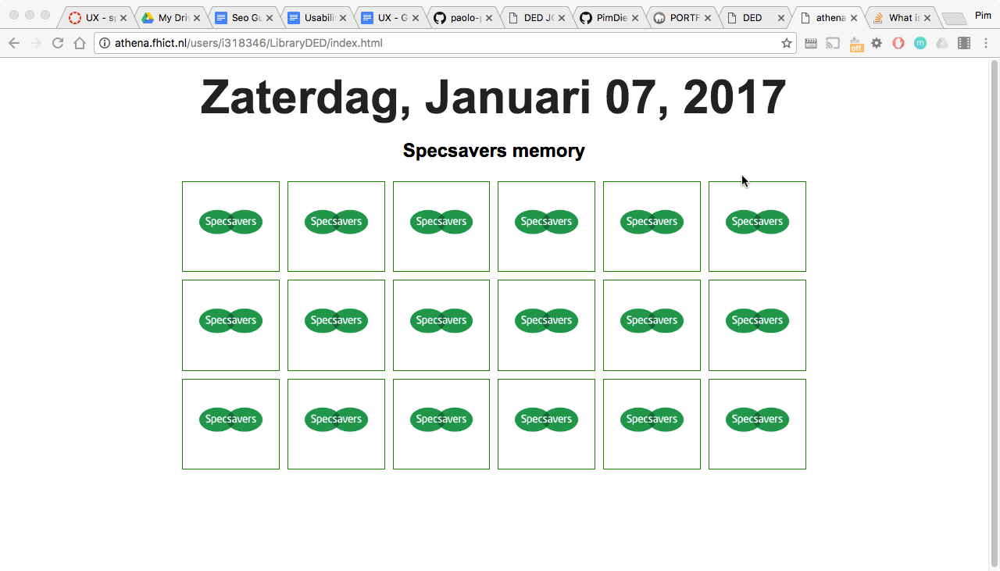

Inleiding
Hieronder vind je mijn opdrachten die ik heb gemaakt voor DED, te beginnen met de criteria zoals in de rubrics beschreven, daar direct onder staan alle opdrachten met de dingen die ik heb geleerd aan de hand van de opdrachten.
Criteria
Kennis frameworks
De student kan aangeven wat standaard code is en kan voor en nadelen van framewerorks benoemen.
Keuze framework
De student heeft een onderbouwde keuze voor een framework gemaakt dat past bij de probleemstelling.
Documentatie
De student heeft documentatie geschreven die er op gericht is de code voor anderen binnen het team te hergebruiken.
Code
De student heeft een combinatie gemaakt tussen bestaande frameworks en eigen frameworks.
Test
De student heeft de applicatie laten testen door peers (medestudenten).
opdrachten
Git
Gitlab hebben we als samenwerkingsplatform gebruikt voor de proftaak zodat we met zijn drieën tegelijk konden werken aan de code voor de proftaak, daarbij hebben we sourcetree gebruikt als desktopapplicatie voor het pushen, pullen en syncen van de code.
Verder heb ik zelf gewerkt met de Github desktopapplicatie om mijn eigen library te uploaden naar Github.
Wat heb ik geleerd
Hier heb ik geleerd hoe ik een samenwerkingsomgeving creëer doormiddel van Github en Gitlab, ook heb ik geleerd hoe ik code commit naar de server.
Frameworks
Een framework is een webapplicatie die ervoor zorgt dat je niet constant zelf alles hoeft te ontdekken, het zijn dus voorgeschreven stukken code die het leven van een ontwikkelaar makkelijker maakt, je hoeft namelijk niet altijd alles zelf meer uit te vinden, alles is tegenwoordig terug te vinden op het internet en frameworks zorgen er dus voor dat je sommige stukken code niet meer zelf hoeft te schrijven, maar aan kan passen naar wat jij wilt bereiken, de voordelen van zo’n framework zijn dus dat je niet meer alles zelf hoeft te doen, wel is een framework niet altijd even flexibel als het gaat om aanpassingen van buiten af.
Frameworks binnen de proftaak
Na een ontdekkingsreis op het internet vond ik impress.js, we zochten namelijk als groep een manier om met een webapplicatie, een mooie overgang van beeld en geluid te maken, dit framework is gebaseerd op de presentatie applicatie Prezi, alleen is impress.js makkelijk vorm te geven, wel werd het lastig om zaken te implementeren, zoals het invoegen van libraries, daarom hebben we als groep gekozen om een aantal losse libraries te maken die losstaan van de proftaak, wat we eventueel nog toe wouden voegen aan onze impress.js is:
- Keuzemogelijkheden, dus geen verhaal van a tot z maar splitsingen.
- Geen mogelijkheid om terug te gaan.
- Overview optie niet nodig.
- Loading screen i.v.m. multimedia.
- Alles moet constant full screen in browser weergegeven worden.
- Type.js toevoegen.
- Naast spatiebalk of pijltoets ook klikken gebruiken om naar volgende dia te gaan.
- Progress bar toevoegen
Wat heb ik geleerd
Wat ik heb geleerd over frameworks is dat het je leven een stuk makkelijker kan maken als je een goed framework kan vinden voor de applicatie waar je aan werkt, wel is het soms lastig om zaken aan te passen die je graag zou willen aanpassen omdat het desbetreffende framework zich daar niet voor leent.
Library
Link naar mijn LibraryDe opdracht was het maken van een eigen Javascript library, hierbij had ik geen idee hoe ik het moest aanpakken, vooral ook omdat er tijdens de opleiding nog veel te weinig met javascript is gewerkt, ook zat het me erg in de weg dat ik helemaal uit het programmeren was door de lange onderzoeksfase van SCO en UX, maar na lang wachten om weer te mogen programmeren ben ik eindelijk in de laatste paar weken aan de gang kunnen gaan met het maken van een library, hier ben ik bezig gegaan met een tutorial die mij collega student Paul me heeft aangedragen.
Het was voor mij slecht te volgen omdat ik eigenlijk nog nooit echt met Javascript heb gewerkt, maar na wat proberen was ik er eindelijk uit hoe ik een library moest aanmaken en hoe je die library aanroept binnen je html, Ik heb in mijn library een aantal functies aangemaakt, de eerste is een aangepast laadscherm, de tweede is een functie die de datum weergeeft en de laaste is een memory game die ik heb toegevoegd, ik had graag veel meer willen doen, maar in de beperkte tijd die ons is gegeven vind ik dat ik het nog wel redelijk heb gedaan.
Wat heb ik geleerd
Bij deze opdracht heb ik geleerd om een javascript library te maken, en vervolgens deze aan te roepen in je html, ook heb ik geleerd dat je eigenlijk meer tijd nodig hebt om goed te worden in javascript en het maken van libraries en dat het niet iets is om maar even tussen neus en lippen door aan het einde van een semester te plakken, erg jammer en een gemiste kans binnen semester 4.